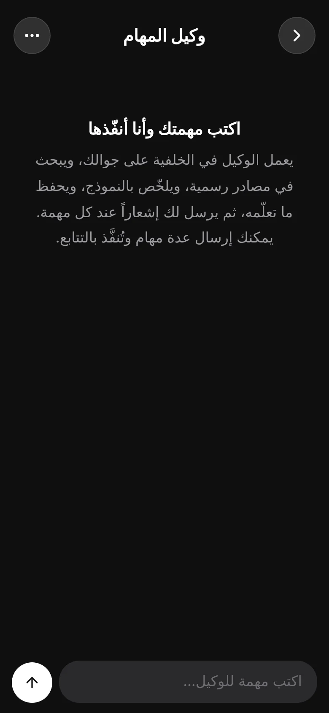
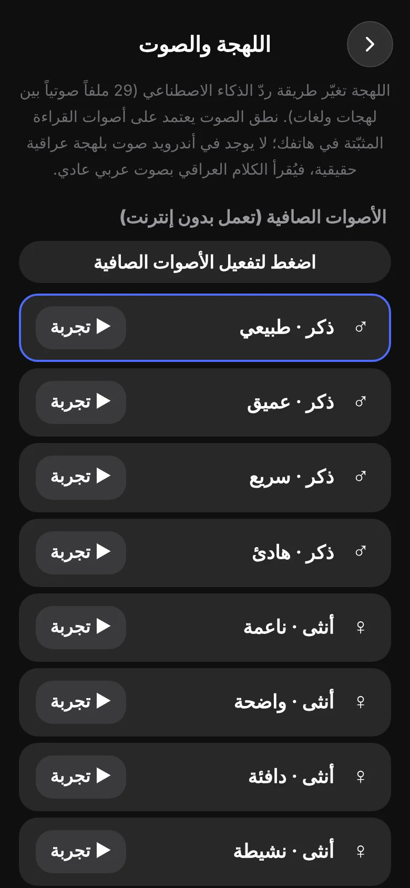
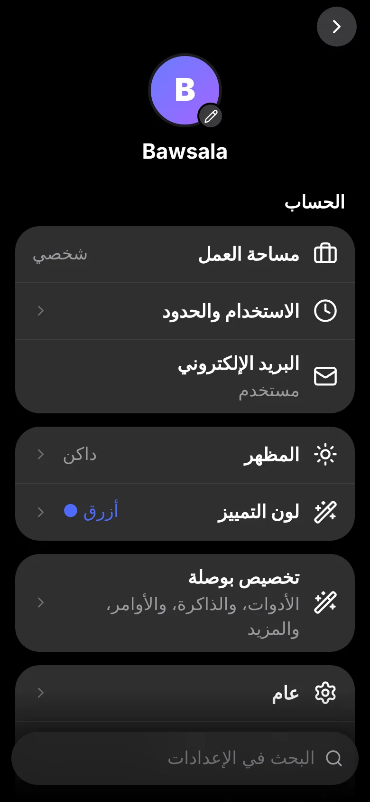

كل ميزة، بتفاصيلها
ما يفعله التطبيق فعلاً، وما لا يفعله، بوضوح.
محادثة تفهمك بلغتك
ردود منظّمة بالعربية مع جداول وأكواد، وتفكير قبل الرد عند الحاجة.
- إيقاف الرد أو إعادة توليده بضغطة
- تعديل رسالتك ثم إعادة الإرسال
- طابور رسائل: اكتب التالية وأنت تنتظر
- بحث في الويب اختياري
- إملاء صوتي ومحادثة صوتية كاملة
- 28 لهجة ولغة (العراقية والخليجية والشامية والمصرية والمغاربية والفصحى وغيرها) لأسلوب الرد

صور بقياسات لكل منصة
صف ما تريد واختر القياس (منشور، قصة، غلاف...) والنمط، ثم احفظ النتيجة في المعرض.
- أنماط احترافية وقياسات جاهزة
- حفظ مباشر في مجلد صور بوصلة
- مشاركة سريعة

ابنِ تطبيقاً أو موقعاً بالكلام
يكتب لك مشروعاً من HTML وCSS وJS ويعرضه داخل التطبيق على شكل هاتف، ثم تصدّره ملفاً أو ZIP.
- معاينة فورية قبل التنزيل
- قواعد تصميم ومهارات مدمجة لنتائج أنظف
- استبيان قصير قبل التصميم لتحديد ذوقك
- في محادثة اختبار الوكيل: الأمر /ابنِ يبني الصفحة ثم يشغّلها ويصلح أخطاءها حتى 3 مرات
وكيل مهام منضبط
تكتب المهمة فينفذها في الخلفية: خطة بحث، قراءة من مصادر رسمية، مسودة، ثم مراجعة المسودة مقابل المصادر.
- المصادر: ويكيبيديا وMDN وStack Exchange عبر واجهاتها الرسمية
- قيود في الكود: https فقط، robots.txt، لا إعادة توجيه، حدّ أقصى للصفحات
- محظور: منصات التواصل (يوتيوب، تيك توك، إنستغرام...)
- ما يتعلمه يُحفظ كملاحظات معرفة تُستخدم في محادثاتك لاحقاً
- إشعار عند الانتهاء أو التعذّر، ولا يمكن حذف المهام بالخطأ

أصوات عصبية على جهازك
اختر من عشرة أصوات وجرّبها، ويقرأ التطبيق بها الردود العربية بدون إنترنت.
- 4 أصوات ذكر و6 أنثى
- تجربة فورية لكل صوت
- صدق المعلومة: الصوت العصبي الحقيقي واحد (ذكر)، والأنثوية مشتقة منه برفع الطبقة وتغيير الخامة
- تعود تلقائياً لصوت الجهاز عند أي فشل

إعدادات بسيطة وواضحة
صفحة واحدة مرتبة بأقسام، وبحث سريع، وخط كبير، ووضع ليلي ونهاري.
- تسجيل خروج بنافذة تأكيد
- تخصيص اللون والمظهر
- قسم للطلاب يفعَّل داخل المحادثة

نموذجك الخاص، إن أردت
أرفقنا مع المشروع بيئة كاملة لتدريب نموذج لغوي صغير بنفسك وتشغيله كخادم متوافق مع OpenAI، ثم ربطه بالتطبيق.
تدريب من الصفر
توكنايزر وبيانات ونموذج Transformer وتدريب وضبط للمحادثة، مع دفتر Colab جاهز.
خادم متوافق
يقدّم نموذجك بواجهة تشبه OpenAI، فيتصل به التطبيق كأي مزوّد.
تعلّم بالاختبار
يشغّل الكود الذي يكتبه النموذج ويحفظ الناجح فقط ليتدرّب عليه (بايثون وجافاسكربت حالياً).